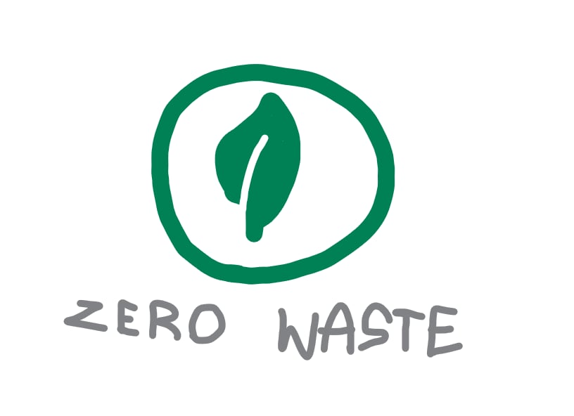

🚯 การลดขยะ (Waste Reduction)
ความหมาย
ความสำคัญ
วิธีการลดขยะ (หลัก 3R / 5R)
3R
Reduce (ลดใช้) → ใช้น้อยลง เช่น ปฏิเสธถุงพลาสติก ใช้ของเท่าที่จำเป็น5R
Recover (นำกลับมาใช้ประโยชน์) → เช่น นำขยะอินทรีย์มาทำปุ๋ยหมักประเภทขยะที่ควรลด
แนวทางการลดขยะในชีวิตประจำวัน
ประโยชน์จากการลดขยะ
-
การลดขยะ คือ กระบวนการหรือวิธีการที่ช่วยให้เกิดขยะน้อยที่สุด ตั้งแต่ขั้นตอนการผลิต
การบริโภค จนถึงการกำจัด เพื่อลดผลกระทบต่อสิ่งแวดล้อมและทรัพยากรธรรมชาติ
-
ลดปริมาณขยะที่ต้องกำจัด → ลดการฝังกลบและเผา
ลดการใช้ทรัพยากรธรรมชาติอย่างสิ้นเปลือง
ช่วยลดมลพิษทางอากาศ น้ำ และดิน
ลดภาระงบประมาณของภาครัฐและเทศบาล
ช่วยแก้ปัญหาภาวะโลกร้อนจากก๊าซเรือนกระจก
Reuse (ใช้ซ้ำ) → นำของเก่ากลับมาใช้ เช่น กล่อง ขวด แก้วน้ำ
Recycle (รีไซเคิล) → แปรรูปวัสดุใช้แล้วเป็นวัตถุดิบใหม่ เช่น กระดาษ พลาสติก โลหะ
Repair (ซ่อมแซม) → ซ่อมสิ่งของที่เสีย แทนการซื้อใหม่
-
ขยะพลาสติก (ถุง ขวด หลอด) - ใช้ซ้ำหรือหันไปใช้วัสดุย่อยสลายได้
ขยะอินทรีย์ (เศษอาหาร) - นำไปทำปุ๋ยหมักหรือน้ำหมักชีวภาพ
ขยะอันตราย (ถ่านไฟฉาย หลอดไฟ สารเคมี) - แยกทิ้งอย่างถูกวิธี
ขยะรีไซเคิล (กระดาษ โลหะ แก้ว) - ส่งเข้าสู่ระบบรีไซเคิล
-
พกถุงผ้า ขวดน้ำ กล่องข้าว แทนการใช้แบบใช้ครั้งเดียว
เลือกซื้อสินค้าบรรจุภัณฑ์น้อย หรือแบบเติม (Refill)
ใช้อุปกรณ์ดิจิทัลเพื่อลดการใช้กระดาษ
ซื้อของเท่าที่จำเป็น ลดการบริโภคเกินความต้องการ
แยกขยะตั้งแต่ต้นทาง
-
ลดมลพิษต่อสิ่งแวดล้อม
ประหยัดค่าใช้จ่ายทั้งครัวเรือนและสังคม
สนับสนุนธุรกิจที่ใช้ บรรจุภัณฑ์รีไซเคิล
สร้างรายได้จากการขายขยะรีไซเคิล
ทำให้เมืองสะอาด น่าอยู่ สุขภาพประชาชนดีขึ้น